Skills
Data Engineering
 Python
SQL
Python
SQL
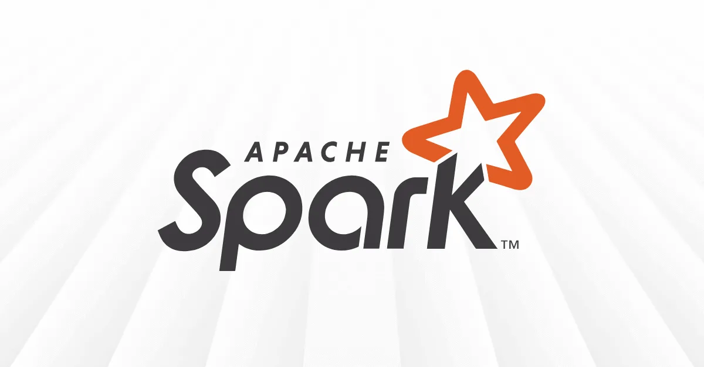
Apache Spark (PySpark, Spark SQL) dbt Airflow
Kafka
Redpanda
Airflow
Kafka
Redpanda
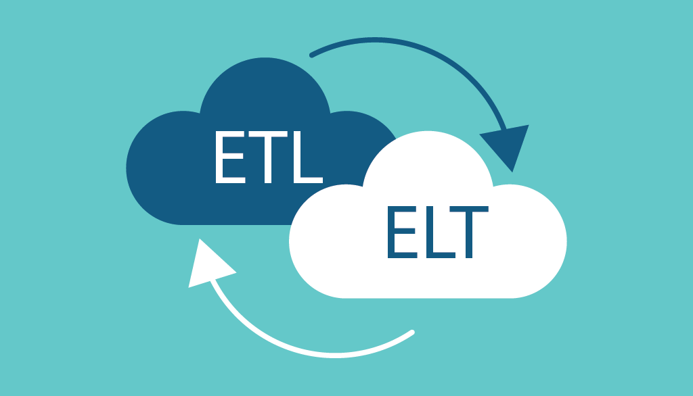
ETL/ELT Pipelines Dimensional Modeling Parquet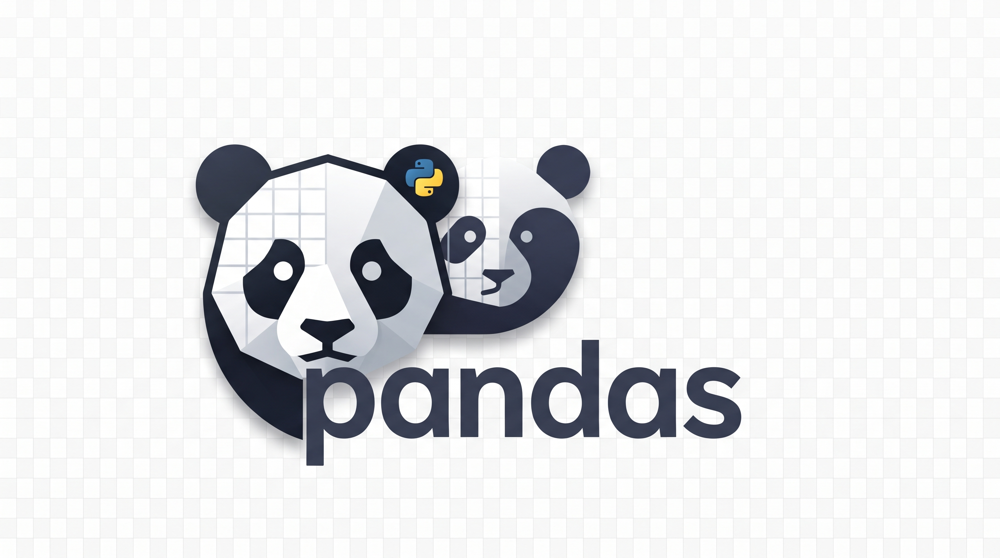
Pandas SSISData Platforms & Cloud
Snowflake
Databricks
Delta Lake
PostgreSQL
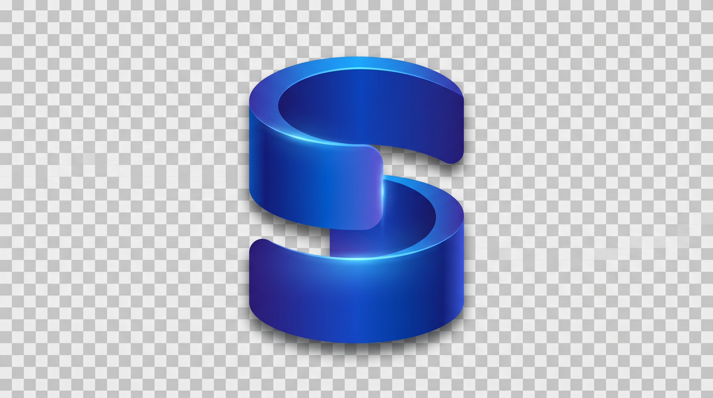
SQL Server T-SQL PL/SQL Query Optimization Amazon Web Services (AWS) Amazon S3 AWS Glue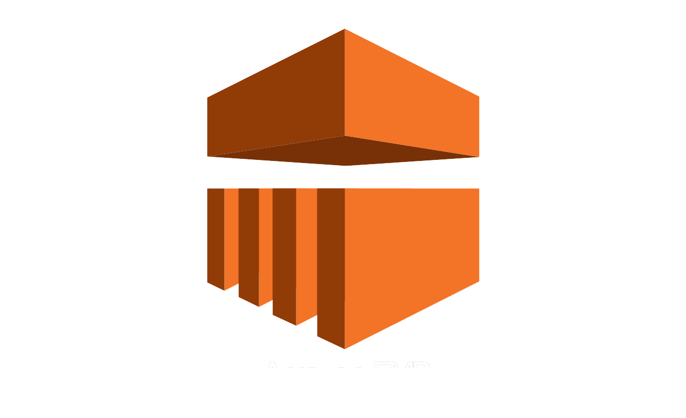
Amazon EMR Amazon Athena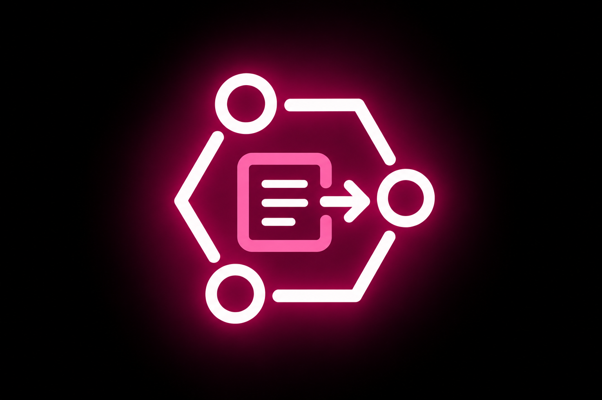
Amazon EventBridge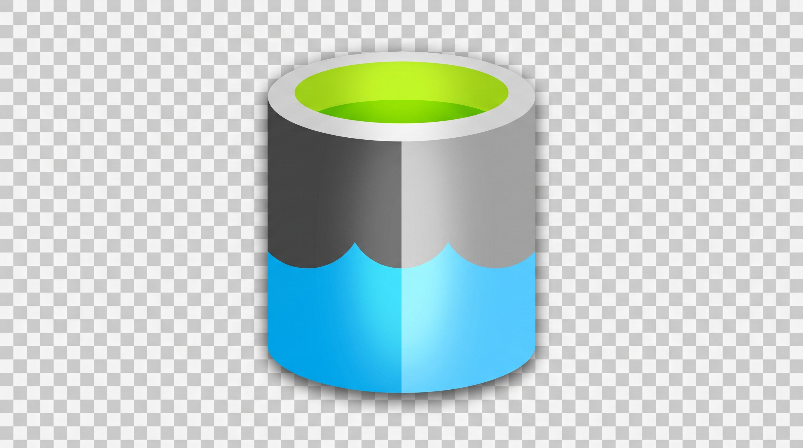
Azure ADLS Gen2 Azure Data FactoryMachine Learning & Statistics
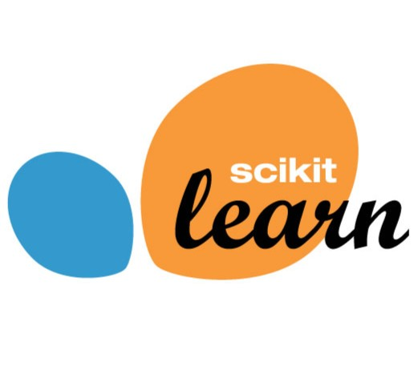
Scikit-learn PyTorch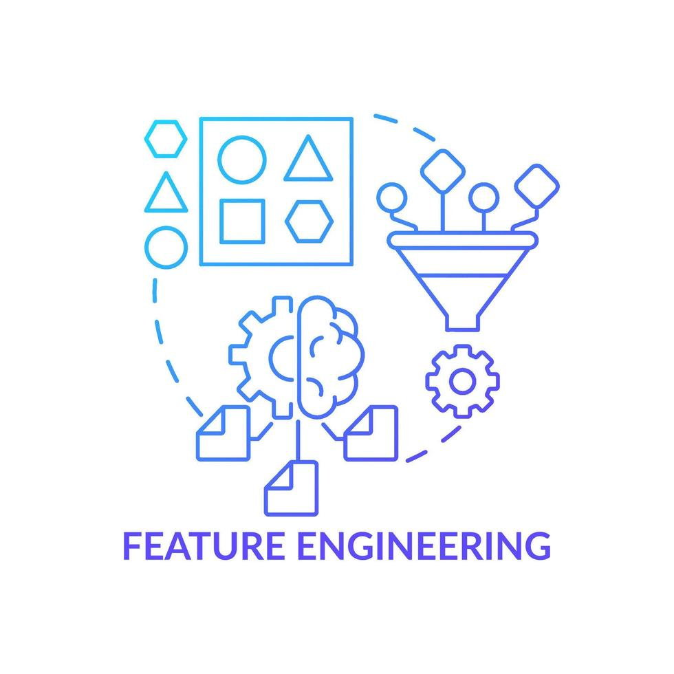
Feature Engineering Model Evaluation Time Series Analysis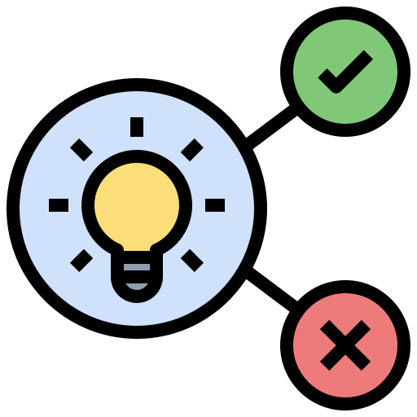
Hypothesis TestingAI Engineering & MLOps
LLMs
RAG
MCP
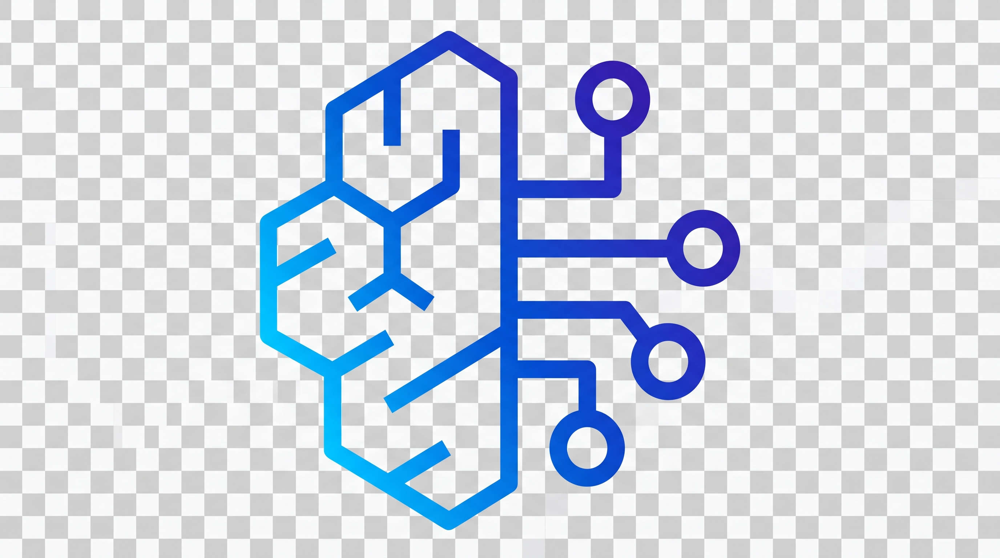
Amazon Bedrock Azure OpenAI (GPT-4) Claude Cursor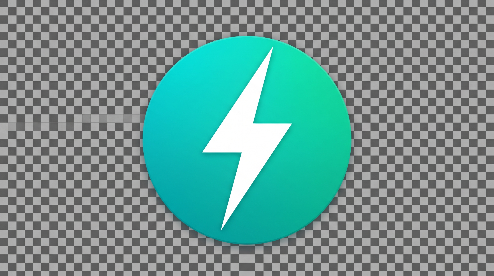
FastAPI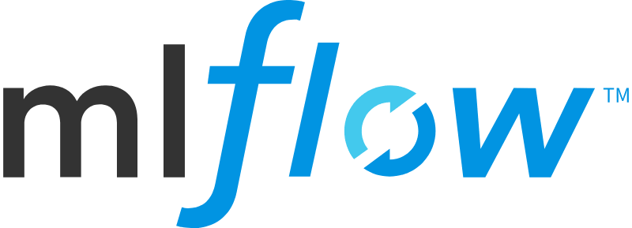
MLflow MLOpsProduct Analytics & BI
Power BI
 Tableau
ThoughtSpot
Tableau
ThoughtSpot
 A/B Testing
A/B Testing
Tableau
ThoughtSpot
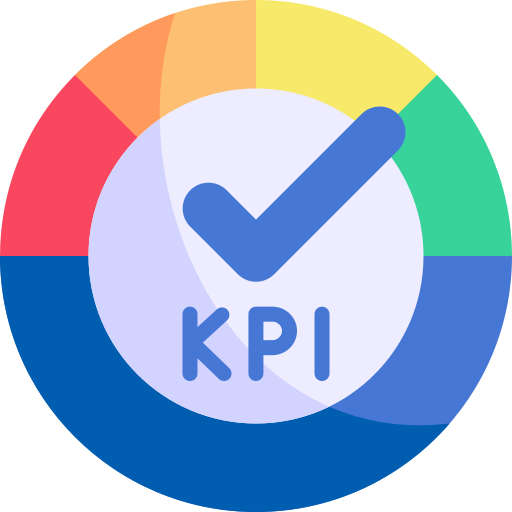
KPI TrackingA/B Testing
DevOps & Data Quality
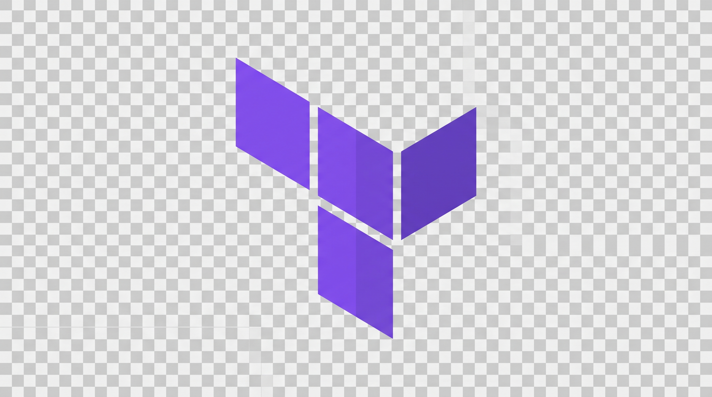
Terraform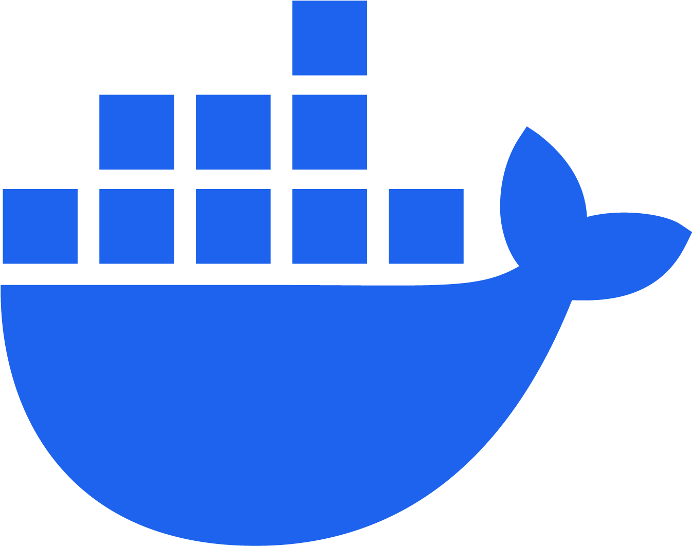
Docker Git
GitHub Actions
Git
GitHub Actions
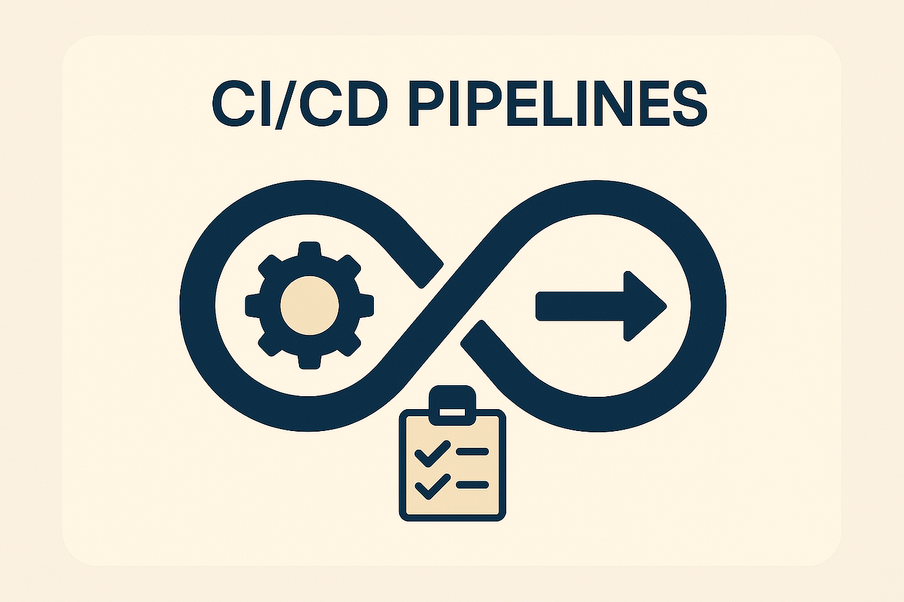
CI/CD Amazon CloudWatch pytest dbt Tests Reconciliation Data Lineage